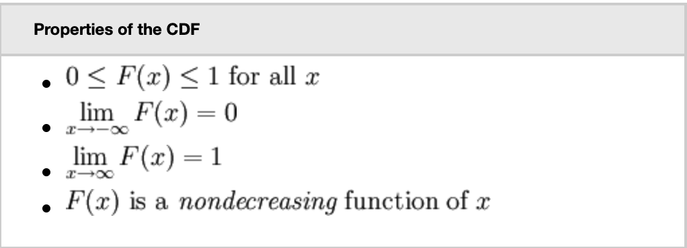
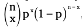

Random Variables and Binomial distribution
[TOC]
Foundation
Random Variables
Discrete : They are the ones which have finite values and can also take countable infinite number of values.
For example, X may be the total number of time heads turn up when we toss a fair coin 100times or total number of times we call our best friend in a month.
Continuous : They are the ones which have uncountably infinite number of values - so many that we can’t even think about counting them.
For example, measuring the speed of the neutrons in the large hadron collider after a collision experiment or national 8th standard maths average of a country.
Cumulative distribution function (cdf)
Sum of all probabilities for X that are equal to or less than a (value)

Expected Value and Variance
Expected value: long-term average value after repeating an experiment theoretically infinite number of times.
- How to calculate:
- Multiply the value of x by its probability for all X
- Sum the results.
Variance: expected amount of variability in our results after repeating an experiment infinite number of times.
- How to calculate:
- Subtract E(x) from x, and square, then multiply by the probability.
- Sum the results.
- How to calculate:
Binomial Distribution
involves only two outcome (yes, no) or (success, failure) or (0, 1)
Checking conditions:
- Fixed number of trials
- Classify the outcome into only two groups
- Probability of success is same for each trial
- Independent trials
pmf = 
here, n is the fixed number of trials.
x is the specified number of successes.
p is the probability of success of any given trial
cdf = sum the pmf untill x or use the binomial table